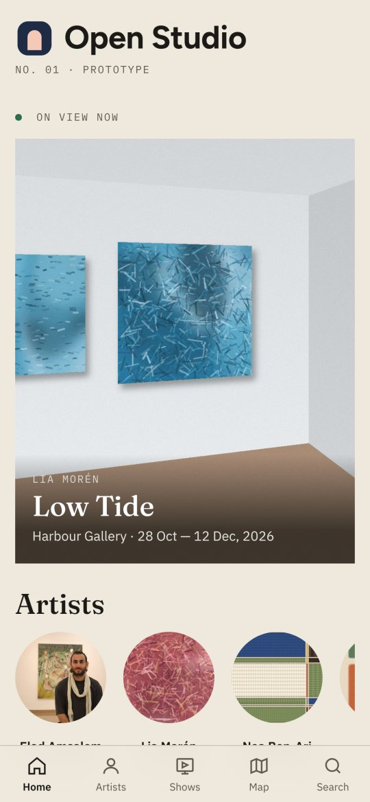
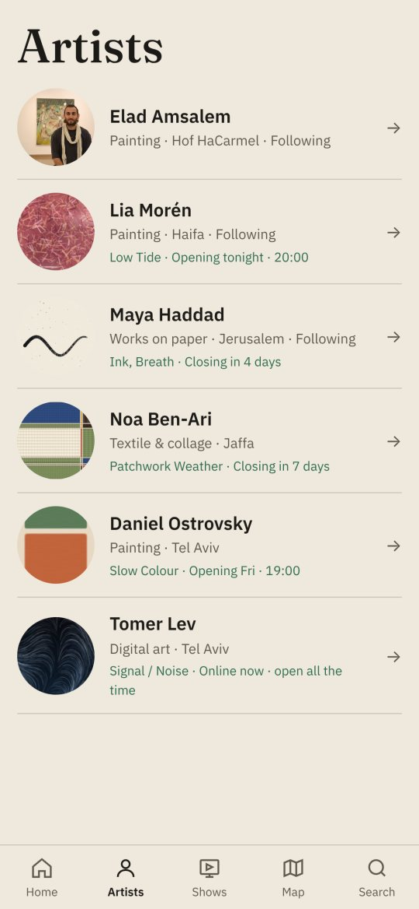
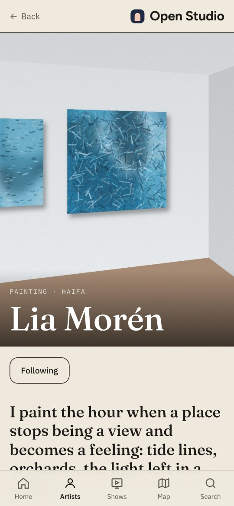
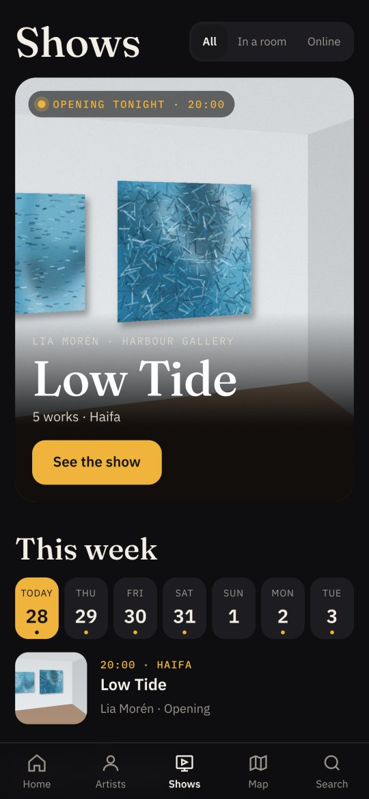
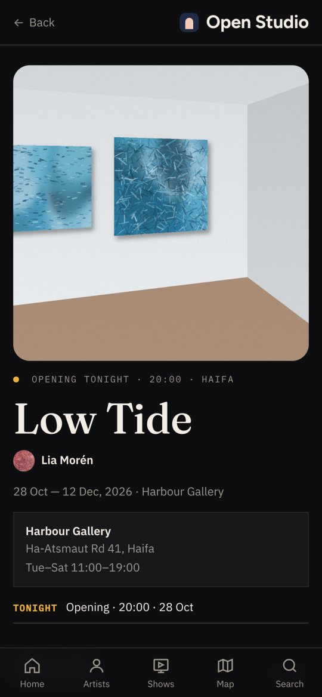
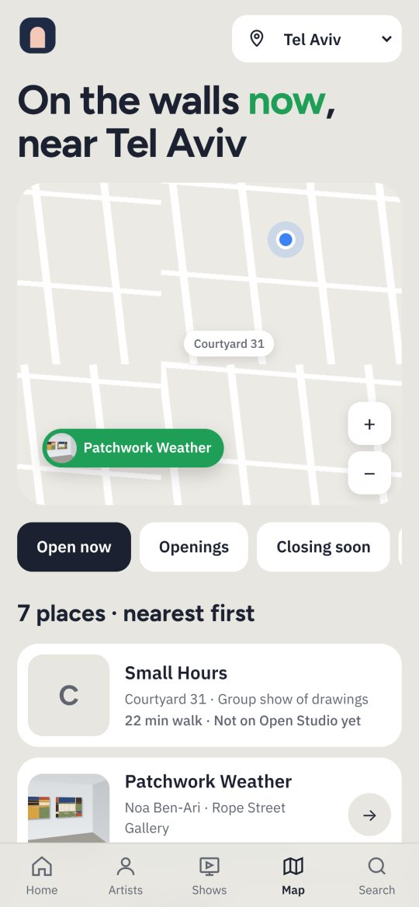
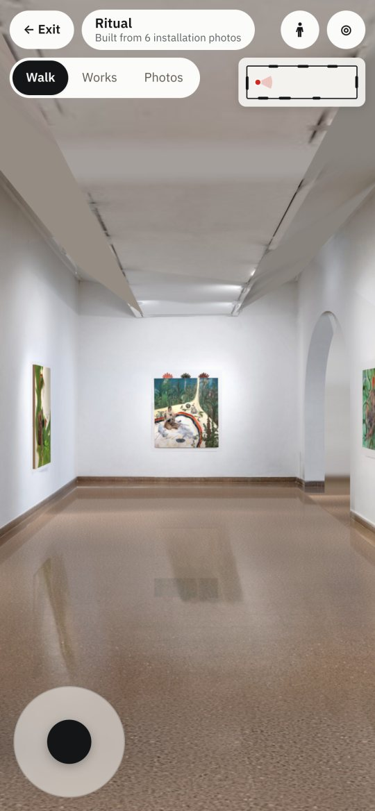

מה בנינו, מה חסר כדי שאנשים אמיתיים ישתמשו, איך נראה עולם האפליקציות היום, ואיך משיקים ומשווקים אפליקציה חדשה.
נכתב על ידי Claude בכובע של מחלקת פיתוח מוצר, על בסיס הקוד במאגר, תהליך העבודה עד כה, ומחקר עדכני (אוקטובר 2026). משלים את דוח הייעוץ העסקי: אותם שלבים, אותם יעדים.







| תחום | מה קיים | מצב |
|---|---|---|
| אפליקציית הקהל | בית, אמנים, תערוכות (עיצוב "ערב פתיחה"), מפה ("על הקירות"), חיפוש, עמוד אמן עם Follow ו"Live from the studio", עמוד תערוכה כאלבום, עמוד עבודה עם "בגודל אמיתי" | עובד |
| הסיור התלת‑ממדי | חדר שנבנה מצילומי ההצבה: אור אמיתי, קשתות, רצפה; הליכה, מצב עבודות, מצב צילומים, מפה קטנה, ג'ירו | עובד |
| צינור הבנייה | זיהוי עבודות בצילומים, מדידת החדר, אפייה, מדידה קפואה, שני שלבי בדיקה, שומר שמחזיר גרסה טובה | עובד, בשרת |
| הצד של האמן | כניסה, פרופיל, עבודות עם בדיקת תמונה, תערוכות, סטטוס סיור, תצוגה מקדימה | אב‑טיפוס, שמור בדפדפן |
| התקנה וזמינות | אפליקציית ווב שאפשר להתקין (PWA), עובדת בלי רשת, מתעדכנת לבד | עובד |
| תשתית ופרסום | GitHub Pages; שתי עבודות אוטומטיות: בניית סיורים ופרסום האפליקציה | חינם, מוגבל |
| תוכן הדגמה | 5 אמנים בדויים, 32 עבודות, 9 תערוכות, סרטוני תהליך | להסיר לפני השקה |
| תחום | היום | חייב לבטא הסגורה | חייב להשקה |
|---|---|---|---|
| חשבונות | אין; הצד של האמן בדפדפן בלבד | כניסה במייל (קישור קסם), חשבון אמן וגלריה | מחיקת חשבון (דרישת App Store), הרשאות צוות לגלריה |
| מסד נתונים | קבצי JSON במאגר; עורך האתר לאלעד | מסד נתונים אמיתי: אמנים, עבודות, תערוכות, מעקבים | גיבויים, הרשאות לפי משתמש |
| העלאות | רק דרך המאגר | העלאת עבודות, צילומי הצבה ווידאו מהטלפון | דחיסה ותמונות קטנות אוטומטית |
| בניית סיורים | GitHub Actions, כ‑25 דק' לסיור | תור עבודות וסטטוס חי לאמן | שרת בנייה משלנו, התראה כשהסיור מוכן |
| לכידה | הנחיה בטקסט | מסך צילום מודרך (וידאו) | בדיקת כיסוי בזמן הצילום |
| זכויות והסכמה | אין | אישור זכויות בכל העלאה; מדיניות פרטיות ותנאי שימוש | נוהל הסרה, תיעוד הסכמות |
| מדידה | אין | אירועי שימוש בסיסיים (PostHog) | לוח מדדים, ניסויים |
| ניטור תקלות | בדיקת טלפון בשרת בלבד | דיווח שגיאות מהטלפונים (Sentry) | התראות ותורנות |
| התראות | אין | מייל | Push לפתיחות של אמנים שעוקבים אחריהם |
| מפה | אריחים של CARTO בלי מפתח | ספק עם מפתח ומכסה (MapTiler / Stadia) | מטמון ובקרת עלויות |
| שפה ונגישות | ממשק באנגלית | החלטה: עברית לפיילוט? | שתי שפות, RTL, בדיקת נגישות |
אחוז המשתמשים שחוזרים אחרי X ימים, ממוצע לכל הקטגוריות (2025–2026):
מקור: Phiture; Business of Apps, דרך Braze.
המשמעות: השקה לא בונה אפליקציה. חזרה בונה. לכן ההתראה "האמנית שאת עוקבת אחריה פותחת תערוכה בחמישי" שווה יותר מכל קמפיין.
החנויות עמוסות, וגילוי בחנות עצמה קשה. אפליקציות חדשות נמצאות היום דרך תוכן קצר (רילס, טיקטוק), קהילות, והמלצות. ASO (אופטימיזציה לחנות) חשוב, אבל רק אחרי שיש ביקוש.
| יכולת | אפליקציית ווב (PWA) | אפליקציה בחנות |
|---|---|---|
| התקנה למסך הבית | ידנית בלבד (שיתוף ← הוסף למסך הבית), בלי הודעת התקנה | מהחנות |
| התראות Push | רק אחרי שהמשתמש התקין ואישר (iOS 16.4 ומעלה) | כן |
| מצלמה ווידאו ללכידה | כן, דרך הדפדפן | כן, עם שליטה מלאה |
| עבודה ברקע, העלאה ארוכה | לא | כן |
| אחסון מקומי | מוגבל, Safari עלול למחוק | יציב |
| גילוי בחנות, אמון | אין | כן |
| עדכון מיידי בלי אישור | כן | דרך בדיקת אפל, עם עדכוני תוכן מהשרת |
| דרך | מה זה | בשבילנו |
|---|---|---|
| PWA (היום) | אתר שמתנהג כמו אפליקציה | לבטא מהיר, חינם, עדכון מיידי |
| Capacitor | עוטף את אותו קוד באפליקציה לחנויות, ומוסיף יכולות של הטלפון | להשקה אותו קוד, עם התראות, מצלמה ושיתוף |
| React Native | כתיבה מחדש בממשק נייטיב | לא עכשיו חודשים של שכתוב בלי ערך למשתמש |
| נייטיב מלא (Swift / Kotlin) | שתי אפליקציות נפרדות | לא כפול עבודה |
מקורות: MagicBell, Toimi ו‑Synthetixis על PWA באייפון (2026); פורומי Apple Developer ו‑Ionic על סעיף 4.2; buildmvpfast על Capacitor ו‑React Native.
| חלק | בחירה | למה |
|---|---|---|
| אפליקציה | הקוד הקיים (ווב), ו‑Capacitor להשקה | בלי שכתוב |
| חשבונות, מסד נתונים, קבצים | Supabase | Postgres אמיתי, כניסה במייל, אחסון קבצים; חינם בהתחלה, $25 לחודש אחר כך |
| בניית סיורים | היום GitHub Actions; אחר כך שרת עבודות בענן | הצינור כבר רץ בשרת, רק מחליפים "איפה" |
| הגשת סיורים ותמונות | CDN (למשל Cloudflare R2) | תמונות כבדות מהר לכל טלפון |
| מדידה | PostHog | מיליון אירועים בחודש בחינם |
| תקלות | Sentry | לדעת על באג לפני שמישהו שולח צילום מסך |
| מפה | MapTiler או Stadia, עם מפתח | תנאי שימוש ברורים |
| שלב | עלות |
|---|---|
| בטא סגורה | $0–30 אומדן |
| בטא ציבורית (כ‑5,000 משתמשים) | $80–200 אומדן |
| חנויות | $99 לשנה + $25 פעם אחת |
מקורות: Supabase ו‑Firebase, השוואות 2026 (dev.to, makerkit); PostHog (מחירון 2026).
הסיור טוב בדיוק כמו החומר שנכנס אליו. ב‑Ritual היו 6 צילומים טובים והתוצאה מדויקת. ב‑Nature of Man ובתערוכת הבוגרים הצינור עצר, ובצדק, כי היה חסר.
| תערוכה | מה היה | מה חסר | תוצאה |
|---|---|---|---|
| Ritual | 6 צילומי הצבה, 10 עבודות | - | סיור חי, 18/18 |
| Nature of Man | צילומים חלקיים, 15 עבודות | 8 מ‑15 עבודות נמצאו; 44% מהקירות; מידות חסרות | לא נבנה |
| תערוכת בוגרים | צילומים חלקיים, 8 עבודות | 3 מ‑8 עבודות; 47% מהקירות | לא נבנה |
| שלב | מה בונים | תנאי מעבר לשלב הבא |
|---|---|---|
| 0 · יסודות שבועות 1–4 | Supabase: חשבונות במייל, מסד נתונים, אחסון · הצד של האמן מחובר לשרת (במקום דפדפן) · העלאות מהטלפון · תור בניית סיורים עם סטטוס · אישור זכויות בהעלאה · מדיניות פרטיות ותנאים · PostHog ו‑Sentry · הסרת ההדגמה ממצב ברירת המחדל · החלטת שם | אמן אמיתי נרשם, מעלה 10 עבודות ותערוכה, ורואה את עצמו באפליקציה, בלי עזרה |
| 1 · בטא סגורה שבועות 5–10 | הזמנה לפי קוד · 10 אמנים, 3–5 גלריות · צילום על ידינו · מסך צילום מודרך, גרסה ראשונה · שמירת תערוכה, הוספה ליומן, "הייתי שם" · QR לפתיחות · הטמעת סיור באתר גלריה · מייל שבועי "חדש אצל האמנים שלך" | 15 סיורים חיים, 70% בניסיון ראשון, 30% מהמבקרים עוקבים אחרי אמן, אפס באגים חוסמים בשבועיים האחרונים |
| 2 · בטא ציבורית שבועות 11–20 | אפליקציה ב‑App Store וב‑Google Play (Capacitor) · Push לפתיחות · "אמנים קרובים" · רשת גישה מהירה בבית · Studio Pro בתשלום · הרשמה עצמית לגלריות · עברית ואנגלית | שימור 10% אחרי 30 יום, 3 גלריות משלמות, אישור בשתי החנויות |
| 3 · צמיחה וחללים חדשים חודש 6+ | חללים דיגיטליים לתערוכות שלא קיימות במציאות · תערוכות קונספט וחיבורים בין אמנים · קול של האמן לכל עבודה · פנייה לאמן או לגלריה (לידים) · עיר בינלאומית ראשונה | לפי דוח הייעוץ: רשת תל אביב מחזיקה את עצמה |
| מסע | מה קורה | מה יכול להשתבש | מה צריך |
|---|---|---|---|
| מבקרת חדשה, קישור מאינסטגרם, אייפון | נכנסת לעמוד התערוכה, נכנסת לסיור, עוקבת אחרי האמנית | הסיור נטען לאט ברשת סלולרית; לא מבינה איך הולכים; עוזבת לפני Follow | טעינה הדרגתית (קיים), הסבר של 3 שורות בכניסה ראשונה, "עקוב" בסוף הסיור |
| אמן מעלה 40 עבודות | נרשם, מעלה עבודות עם מידות, יוצר תערוכה | תמונות כבדות; מידות חסרות; מתעייף באמצע | העלאה ברקע, שמירה אוטומטית, בדיקת תמונה מיידית (קיים באב‑הטיפוס) |
| גלריה, בוקר אחרי פתיחה | מעלה וידאו הליכה, מחכה לסיור | הוידאו חלקי; הסיור לא עובר בדיקה | סטטוס שמסביר מה חסר (קיים), מסך צילום מודרך, התראה כשמוכן |
| ערב פתיחה | 200 איש סורקים QR בבת אחת | עומס על השרת והמפה | סיורים כקבצים סטטיים ב‑CDN (כך זה עובד כבר היום) |
| טלפון ישן או רשת חלשה | אנדרואיד בן 5 שנים | זיכרון נגמר, עבודה חסרה בסיור | מעבר הטלפון בבדיקה (קיים), תקציב זיכרון, ניסיון חוזר (קיים) |
| אמנית מבקשת להסיר עבודה | "זו לא הייתה אמורה להופיע" | העבודה מופיעה בסיור ובצילומים | הסתרה מהסיור (מסכה), נוהל 48 שעות |
| אפל דוחה את האפליקציה | סעיף 4.2 | עיכוב השקה | להגיש רק עם מצלמה, התראות ושיתוף; PWA ממשיכה לעבוד בינתיים |
| מבקר מחו"ל | לא מבין עברית | תוכן בעברית בלבד | ממשק באנגלית (קיים), תרגום אוטומטי של טקסטים |
אפליקציות לא "מושקות" ביום אחד. הן נבנות בשלבים: קהל קטן שאוהב אותן, ואחר כך גל. בעולם האמנות הערוצים הכי חזקים הם האנשים עצמם: אמנים, גלריות ופתיחות.
| ערוץ | איך | עלות | מתי |
|---|---|---|---|
| הקהל של כל אמן | ערכת שיתוף: קישור, QR, תבנית סטורי, וסרטון "הליכה בתערוכה" אוטומטי מכל סיור | 0 | בטא סגורה |
| גלריות | הטמעת סיור באתר, QR בפתיחה, ניוזלטר הגלריה | 0 | בטא סגורה |
| תוכן קצר | אינסטגרם וטיקטוק של Open Studio: הליכות בתערוכות, סרטוני תהליך, "מה פותח השבוע" | זמן | שבוע 6+ |
| בתי ספר לאמנות | תערוכות בוגרים: כל המחזור בסיור אחד | 0 | עונת בוגרים |
| אירועים | Fresh Paint, לילות גלריות: "כל התערוכות, מהטלפון" | נמוכה | בטא ציבורית |
| עיתונות אמנות | סיפור: "תערוכות שלא נעלמות"; אמן‑מייסד | 0 | בטא ציבורית |
| חנויות (ASO) | שם, מילות מפתח, צילומי מסך, ביקורות | 0 | אחרי אישור |
| פרסום ממומן | רק אחרי שהשימור מוכח | גבוהה | לא לפני חודש 6 |
מקורות: Flowjam ו‑SEM Nexus על רשימות המתנה (2026); VMobify על השקת אפליקציות; ArtRabbit, דף Partnerships.
| אירוע | למה |
|---|---|
| tour_enter / tour_time | האם הסיור מחזיק |
| tour_mode (walk / works / photos) | איך אנשים מסתובבים |
| follow / unfollow | החזון עצמו |
| log_open / log_complete | יומן הסטודיו |
| show_save / calendar_add | כוונה להגיע |
| map_place / near_me | שימוש במפה |
| artist_signup / upload / capture_start | הצד הקשה |
| space_built (ok / fail, reason) | הצלחה בניסיון ראשון |
| error (Sentry) | יציבות |
| תפקיד | מה עושה | היום | מתי לגייס |
|---|---|---|---|
| מייסד ומנהל מוצר | חזון, קשר עם אמנים וגלריות, החלטות | אלעד | - |
| הנדסה (אפליקציה, תלת‑ממד, תשתית) | פיתוח, בדיקות אוטומטיות, תפעול | Claude | מהנדס/ת אחרי גיוס, לשמירת ידע ותורנות |
| QA | בדיקות אוטומטיות בשרת ובטלפון | Claude + אלעד באייפון | בודקי בטא מהקהילה |
| מעצב/ת מוצר | סקירת חוויה, מותג, שם | Claude + אלעד | פרילנס לשבועיים, בשלב היסודות (שם ומותג) |
| קהילה ועולם האמנות | גלריות, אמנים, פתיחות, משוב | אלעד | חצי משרה, בבטא הסגורה |
| לכידה | צילום תערוכות בפיילוט | אלעד | צלם/ת לפי תערוכה, בבטא הסגורה |
| משפטי | תנאים, פרטיות, זכויות, שם | - | עו"ד, חבילה חד‑פעמית לפני הבטא |
| צמיחה ותוכן | רשתות, עיתונות, השקה | - | בבטא הציבורית |
| החלטה | המלצת המחלקה |
|---|---|
| אפליקציית ווב או חנויות? | ווב לבטא, Capacitor לחנויות בבטא הציבורית |
| Supabase או Firebase? | Supabase: נתונים יחסיים (אמן, עבודה, תערוכה), מחיר צפוי, אפשר לארח לבד |
| שפת ממשק | אנגלית + עברית מהבטא הציבורית; לפיילוט, לפי מה שהאמנים יגידו |
| הדגמה | להשאיר כ"דוגמה" במסך האמן, להוריד מהבית לפני הבטא |
| תקציב חודשי לתשתיות | עד $50 בבטא; לבדוק שוב בבטא הציבורית |
שימור: Phiture, Mobile Growth Stack (2025–2026); Business of Apps, דרך Braze; Getstream; AppsFlyer, 2025 App Retention Benchmarks.
כלכלת אפליקציות: RevenueCat, State of Subscription Apps 2026, דרך Subscription Insider.
אפליקציות ווב באייפון: MagicBell, PWA iOS Limitations (2026); Toimi; Synthetixis; WebsCraft על Push באייפון.
App Store, סעיף 4.2: פורומי Apple Developer; פורום Ionic; MobiLoud.
Capacitor ו‑React Native: buildmvpfast (2026); Capgo.
Supabase ו‑Firebase: makerkit; dev.to; weweb (2026).
PostHog: מחירון ומדריכים לסטארטאפים (2026).
Gaussian Splatting: Utsubo guide (2026); UploadVR; Radiance Fields.
השקה ורשימות המתנה: Flowjam, First 1,000 Waitlist Signups (2026); SEM Nexus; VMobify; LaunchList.
צוות: First Round Review, When to Hire Your First PM; Amplify Partners; NextView.
נתוני המוצר: המאגר eladamsalemart/eladamsalem.github.io, ענף studio (28.10.2026): studio/app, studio/app/space/pipeline, data/spaces/*.status.json.
| שבועות | ייעוץ עסקי | פיתוח מוצר |
|---|---|---|
| 1–4 | שיחות עומק, שם, תמחור לבדיקה | יסודות: חשבונות, העלאות, פרטיות, מדידה |
| 5–10 | פיילוט עם 3–5 גלריות ו‑10 אמנים, צילום על ידינו | בטא סגורה, מסך צילום מודרך |
| 11–13 | בדיקת מחיר, החלטה: ממשיכים, משנים או עוצרים | Capacitor, הגשה לחנויות |
| 14–20 | שותפויות, רגע השקה | בטא ציבורית בישראל |